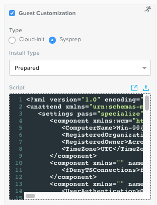
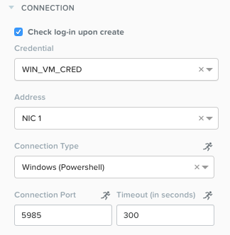

Calm: Windows Blueprint¶
Overview¶
Note
This blueprint does assume some basic Microsoft Sysprep knowledge, specifically around an unattended XML answer file. Estimated time to complete: 60 MINUTES
Up to this point, we’ve been working with Linux based User VMs, and consequently, SSH. We’ll now explore deploying a Windows based VM, and modifying it with a Powershell script, all natively via Nutanix Calm.
Creating Blueprint (Windows)¶
In this exercise you will create a Nutanix Calm Blueprint based on a Microsoft Windows 10 image. The image will be sysprepped with an unattended XML answer file, and then will be added to a Domain via a Powershell script. We’ll also add a script to remove the computer from the Domain upon deletion.
Creating Blueprint¶
From Prism Central > Calm, select Blueprints from the sidebar and click + Create Application Blueprint.
Specify Windows<INITIALS> in the Blueprint Name field. Enter a Description in the Description field. Select Calm from the Project drop down menu and click Proceed.
Click Credentials > and enter both of the following credentials:
Note
You’ll likely notice that both credentials have the same username and password. For this reason, we technically could use a single credential. However, in the real world it is extremely unlikely (and unwise) that both your User VMs and your Domain credentials are the exact same. For that reason, we’ll leave them seperate to make this Blueprint more portable.
- Credential Name - WIN_VM_CRED
- Username - Administrator
- Secret - Password
- Key - nutanix/4u
- Credential Name - DOMAIN_CRED
- Username - Administrator
- Secret - Password
- Password - nutanix/4u
Click Save, and then Back.
Setting Variables¶
As we’ve seen in previous labs, variables improve the extensibility of Blueprints. For this Blueprint, we’ll want to define the domain name that the Windows VM will join to, and the IP of the Active Directory server. We’ll leave both the Secret and Runtime variables un-checked.
In the Configuration Pane under Variable List, fill out the following fields:
| Variable Name | Value |
| DOMAIN | ntnxlab.local |
| AD_IP | <DC-VM-IP> (10.X.X.40) |
Click Save.
Adding Windows Service¶
In Application Overview > Services, click .
Note that Service1 appears in the Workspace and the Configuration Pane reflects the configuration of the selected Service.
Fill out the following fields:
Service Name - Windows10
Name - Windows10_AHV
Cloud - Nutanix
OS - Windows
VM Name - Win-@@{calm_array_index}@@-@@{calm_time}@@
Image - Windows10
Device Type - Disk
Device Bus - SCSI
Select Bootable
vCPUs - 2
Cores per vCPU - 1
Memory (GiB) - 4
Select Guest Customization
Type - Sysprep
Install Type - Prepared
Script - Paste in the following Unattended XML:
<?xml version="1.0" encoding="UTF-8"?> <unattend xmlns="urn:schemas-microsoft-com:unattend"> <settings pass="specialize"> <component xmlns:wcm="http://schemas.microsoft.com/WMIConfig/2002/State" xmlns:xsi="http://www.w3.org/2001/XMLSchema-instance" name="Microsoft-Windows-Shell-Setup" processorArchitecture="amd64" publicKeyToken="31bf3856ad364e35" language="neutral" versionScope="nonSxS"> <ComputerName>Win-@@{calm_unique}@@</ComputerName> <RegisteredOrganization>Nutanix</RegisteredOrganization> <RegisteredOwner>Acropolis</RegisteredOwner> <TimeZone>UTC</TimeZone> </component> <component xmlns="" name="Microsoft-Windows-TerminalServices-LocalSessionManager" publicKeyToken="31bf3856ad364e35" language="neutral" versionScope="nonSxS" processorArchitecture="amd64"> <fDenyTSConnections>false</fDenyTSConnections> </component> <component xmlns="" name="Microsoft-Windows-TerminalServices-RDP-WinStationExtensions" publicKeyToken="31bf3856ad364e35" language="neutral" versionScope="nonSxS" processorArchitecture="amd64"> <UserAuthentication>0</UserAuthentication> </component> <component xmlns:wcm="http://schemas.microsoft.com/WMIConfig/2002/State" xmlns:xsi="http://www.w3.org/2001/XMLSchema-instance" name="Networking-MPSSVC-Svc" processorArchitecture="amd64" publicKeyToken="31bf3856ad364e35" language="neutral" versionScope="nonSxS"> <FirewallGroups> <FirewallGroup wcm:action="add" wcm:keyValue="RemoteDesktop"> <Active>true</Active> <Profile>all</Profile> <Group>@FirewallAPI.dll,-28752</Group> </FirewallGroup> </FirewallGroups> </component> </settings> <settings pass="oobeSystem"> <component xmlns:wcm="http://schemas.microsoft.com/WMIConfig/2002/State" xmlns:xsi="http://www.w3.org/2001/XMLSchema-instance" name="Microsoft-Windows-Shell-Setup" processorArchitecture="amd64" publicKeyToken="31bf3856ad364e35" language="neutral" versionScope="nonSxS"> <UserAccounts> <AdministratorPassword> <Value>@@{WIN_VM_CRED.secret}@@</Value> <PlainText>true</PlainText> </AdministratorPassword> </UserAccounts> <AutoLogon> <Password> <Value>@@{WIN_VM_CRED.secret}@@</Value> <PlainText>true</PlainText> </Password> <Enabled>true</Enabled> <Username>Administrator</Username> </AutoLogon> <FirstLogonCommands> <SynchronousCommand wcm:action="add"> <CommandLine>cmd.exe /c netsh firewall add portopening TCP 5985 "Port 5985"</CommandLine> <Description>Win RM port open</Description> <Order>1</Order> <RequiresUserInput>true</RequiresUserInput> </SynchronousCommand> <SynchronousCommand wcm:action="add"> <CommandLine>powershell -Command "Enable-PSRemoting -SkipNetworkProfileCheck -Force"</CommandLine> <Description>Enable PS-Remoting</Description> <Order>2</Order> <RequiresUserInput>true</RequiresUserInput> </SynchronousCommand> <SynchronousCommand wcm:action="add"> <CommandLine>powershell -Command "Set-ExecutionPolicy -ExecutionPolicy RemoteSigned"</CommandLine> <Description>Enable Remote-Signing</Description> <Order>3</Order> <RequiresUserInput>false</RequiresUserInput> </SynchronousCommand> </FirstLogonCommands> <OOBE> <HideEULAPage>true</HideEULAPage> <SkipMachineOOBE>true</SkipMachineOOBE> </OOBE> </component> <component xmlns:wcm="http://schemas.microsoft.com/WMIConfig/2002/State" xmlns:xsi="http://www.w3.org/2001/XMLSchema-instance" name="Microsoft-Windows-International-Core" processorArchitecture="amd64" publicKeyToken="31bf3856ad364e35" language="neutral" versionScope="nonSxS"> <InputLocale>en-US</InputLocale> <SystemLocale>en-US</SystemLocale> <UILanguageFallback>en-us</UILanguageFallback> <UILanguage>en-US</UILanguage> <UserLocale>en-US</UserLocale> </component> </settings> </unattend>
Note
This Unattended XML answer file will set some basic computer information such as hostname and organization, configure the Administrator password to our WIN_VM_CRED secret, open Powershell port 5985 in the firewall, and enable remote Powershell functionality.
Select under Network Adapters (NICs)
NIC - Primary
Credential - Select WIN_VM_CRED and leave the rest of the fields as default

Click Save and ensure no errors or warnings pop-up. If they do, resolve the issue, and Save again.
Package Install¶
With the Windows10 service icon selected in the workspace window, scroll to the top of the Configuration Panel, click Package. Name the Package as WIN_PACKAGE, and then click the Configure install button.
On the Blueprint Canvas section, a Package Install field will pop up next to the Windows10 Service tile:
Click on the + Task button, and fill out the following fields on the Configuration Panel on the right:
- Name Task - JoinDomain
- Type - Execute
- Script Type - Powershell
- Credential - WIN_VM_CRED
Copy and paste the following script into the Script field:
$HOSTNAME = "Win-@@{calm_unique}@@"
function Set-Hostname{
[CmdletBinding()]
Param(
[parameter(Mandatory=$true)]
[string]$Hostname
)
if ($Hostname -eq $(hostname)){
Write-Host "Hostname already set."
} else{
Rename-Computer -NewName $HOSTNAME -ErrorAction Stop
}
}
function JointoDomain {
[CmdletBinding()]
Param(
[parameter(Mandatory=$true)]
[string]$DomainName,
[parameter(Mandatory=$false)]
[string]$OU,
[parameter(Mandatory=$true)]
[string]$Username,
[parameter(Mandatory=$true)]
[string]$Password,
[parameter(Mandatory=$true)]
[string]$Server
)
$adapter = Get-NetAdapter | ? {$_.Status -eq "up"}
$adapter | Set-DnsClientServerAddress -ServerAddresses $Server
if ($env:computername -eq $env:userdomain) {
Write-Host "Not in domain"
$adminname = "$DomainName\$Username"
$adminpassword = ConvertTo-SecureString -asPlainText -Force -String "$Password"
Write-Host "$adminname , $password"
$credential = New-Object System.Management.Automation.PSCredential($adminname,$adminpassword)
Add-computer -DomainName $DomainName -Credential $credential -force -Options JoinWithNewName,AccountCreate -PassThru -ErrorAction Stop
} else {
Write-Host "Already in domain"
}
}
if ($HOSTNAME -ne $Null){
Write-Host "Setting Hostname"
Set-Hostname -Hostname $HOSTNAME
}
JointoDomain -DomainName "@@{DOMAIN}@@" -Username "@@{DOMAIN_CRED.username}@@" -Password "@@{DOMAIN_CRED.secret}@@" -Server "@@{AD_IP}@@"
Restart-Computer -Force -AsJob
exit 0
Note
Looking at the script you can see a function that sets the VM’s hostname if it is not already set, a function that joins the computer to the domain specified via our macro and credentials that we set earlier, and finally restarts the user VM so the domain join takes affect.
Package Uninstall¶
Select the Windows10 service icon in the workspace window again and scroll to the top of the Configuration Panel, click Package.
- Click - Configure Uninstall
- Click - + Task
- Name Task - RemoveDomain
- Type - Execute
- Script Type - Powershell
- Credential - WIN_VM_CRED
Copy and paste the following script into the Script field:
$HOSTNAME = "Win-@@{calm_unique}@@"
function RemoveFromDomain {
[CmdletBinding()]
Param(
[parameter(Mandatory=$true)]
[string]$DomainName,
[parameter(Mandatory=$false)]
[string]$OU,
[parameter(Mandatory=$true)]
[string]$Username,
[parameter(Mandatory=$true)]
[string]$Password,
)
$adapter = Get-NetAdapter | ? {$_.Status -eq "up"}
$adapter | Set-DnsClientServerAddress -ServerAddresses $Server
$adminname = "$DomainName\$Username"
$adminpassword = ConvertTo-SecureString -asPlainText -Force -String "$Password"
Write-Host "$adminname , $password"
$credential = New-Object System.Management.Automation.PSCredential($adminname,$adminpassword)
Remove-computer -UnjoinDomaincredential $credential -PassThru -Verbose -Force
Write-Host "Removed from domain @@{DOMAIN}@@"
}
RemoveFromDomain -DomainName "@@{DOMAIN}@@" -Username "@@{DOMAIN_CRED.username}@@" -Password "@@{DOMAIN_CRED.secret}@@"
Note
This script contains a function which removes the computer from the domain, utilizing the DOMAIN_CRED credentials that we defined earlier.
Click Save. You will be prompted with specific errors if there are validation issues such as missing fields or unacceptable characters.
Blueprint Launch and Verification¶
Launching the Blueprint¶
From the toolbar at the top of the Blueprint Editor, click Launch.
In the Name of the Application field, specify a unique name (e.g. Windows-<INITIALS>-1).
Click Create.
You will be taken directly to the Applications page to monitor the provisioning of your Blueprint.
Select Audit > Create to view the progress of your application. You’ll likely notice that the Windows10_AHV - Check Login takes some time to complete, as not only do we have to wait for the VM to power on, we have to wait for it to get Sysprepped with our Unattended XML file. Once the login task is complete, select the JoinDomain task to view the output of our domain join script.
Note the status changes to Running after the Blueprint has been successfully provisioned.
Verification¶
Once the application is in a Running state, click on the Services tab, then select the Windows10 service. On the pane that opens to the right, copy the Name of the VM (it should be named something like Win-0-123456-789012). Next, click on the Explore tab at the very top of Prism Central, ensure VMs is selected on the left side, and paste in the name of your VM to filter.
Next, select your VM as shown above, then click the Actions button near the top, and then select Launch Console. You should now be able to access your Windows VM.
At this point you’re welcome to run the Delete action to clean up your application and underlying VM. Alternatively, you could run the Soft Delete action, which deletes the application from Calm’s point of view, but leaves the underlying VM(s) up and running. This is useful when the VM will be used and managed perpetually by an end user, and isn’t needed to be managed by Calm.
Takeaways¶
- In addition to Linux VM management with shell scripts, Nutanix Calm can natively manage Windows VMs via Powershell and Sysprep.
- Although the labs have focused solely on either Linux or Windows, Calm also supports managing different OSes within the same blueprint. You can even manage VMs on different clouds, all within the same blueprint.
- Calm’s system defined Soft Delete action allows you to delete an application from Calm, without affecting the underlying VMs, which is useful for Jumpboxes and Developer workstations.